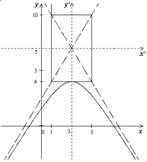

П 8.№6.
Установите, какую линию определяет уравнение Нарисуйте ее график.
РЕШЕНИЕ:
При возведем обе части
уравнения в квадрат:
или
Выделяем в правой части полный квадрат:
или
Это уравнение гиперболы, ,
полуоси , .
Исходное уравнение  определяет
нижнюю ветвь гиперболы, расположенную под прямой .
определяет
нижнюю ветвь гиперболы, расположенную под прямой .
определяет
нижнюю ветвь гиперболы, расположенную под прямой . 
Ответ: Нижняя ветвь гиперболы